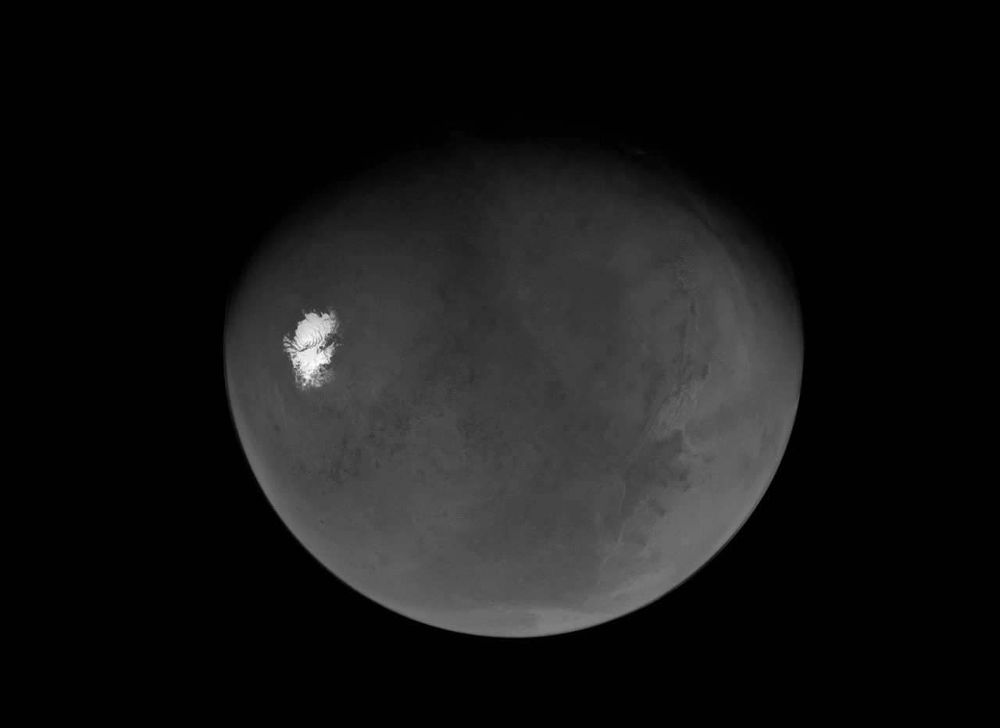

Image credits.
Real mission imagery, credited at the source. Selection checked on November 5, 2026. “Recent” refers to the publication or mission dates below, rather than a claim that every image is the most recent photograph of Mars.
Mars south pole / Psyche

PIA26772 · NASA/JPL-Caltech/ASU. Acquired May 15, 2026. Added to NASA Photojournal May 19, 2026. The grayscale image is resized and converted to WebP for this website.
Original image and mission description ↗
Martian Dawn / Curiosity

NASA/JPL-Caltech/MSSS. NASA article published October 19, 2026. The source panorama was released October 6, 2026 and acquired August 11, 2026 (Sol 4982). The website image is resized, converted to WebP and cropped responsively; a dark overlay is used for text legibility. The hero duplicates the same photograph with an SVG ridge mask so the POF wordmark appears behind the mountains; the geological scene itself is not AI-generated.
Original image and acquisition information ↗
POF interface and workflow images
Interface screenshots are from POF Workbench. The training screenshot contains demonstration metrics and terrain and is not evidence of model accuracy. The active-learning illustration uses the project’s existing Mars mesa example image; the displayed contour is illustrative. Original project asset and its provenance note are retained in the website repository.
Typography
Manrope and Space Grotesk, distributed under their respective SIL Open Font License terms. Fonts are served locally; licenses accompany the website assets.
Attribution and independence
POF Workbench is developed by 南方科技大学行星与人工智能实验室. NASA imagery is used as credited visual and educational context. NASA does not endorse this software. NASA logos and mission insignia are not used as POF branding.